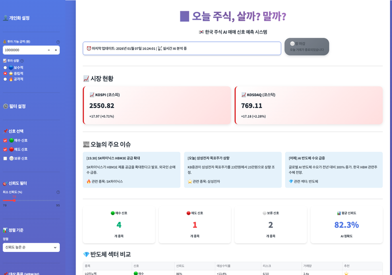
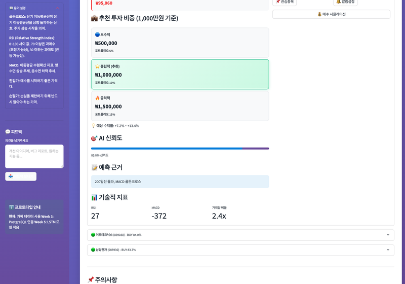
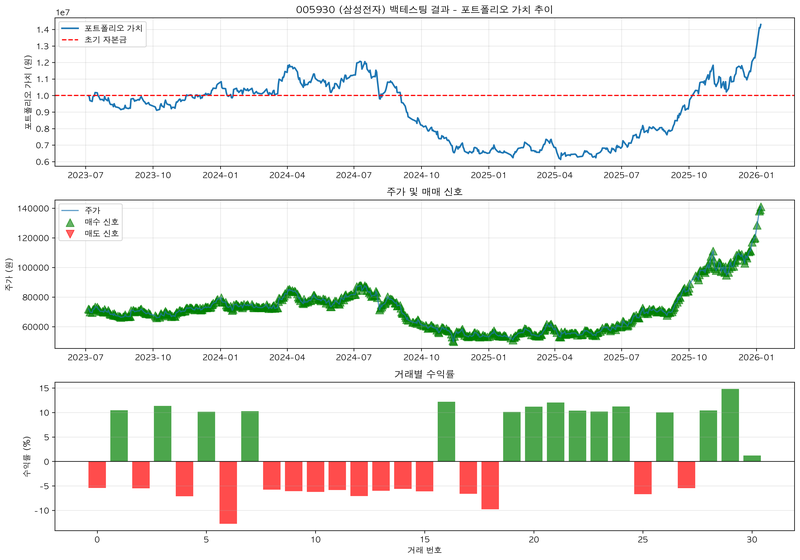

초기 타겟 KRX 포기 → 네이버 금융 피벗 — KRX가 로그인 필수로 전환돼(LOGOUT/alert만 반환) 비회원 수집이 원천 차단 → 동일 데이터를 공개하는 네이버 시총순위로 대체 경로.
Selenium 대신 requests + BeautifulSoup — 대상이 로그인 불필요한 정적 HTML이라 헤드리스 브라우저 없이 87페이지를 ~36초에 수집(가벼움·속도 우선).
User-Agent 위장 + 0.3초 딜레이 + 재시도 — UA가 없으면 403으로 차단되고, 연속 요청 시 부하·차단을 피하려 딜레이·점증 백오프 재시도를 넣음(안정성을 속도보다 우선).
전일비를 정규식 + img alt로 파싱, 구분행 필터 — 셀이 ‘<img alt="상승">13,500’ 형태라 그대로 변환하면 실패(‘0종목 수집’ 버그) → 사이트 마크업 제약에 맞춰 파싱 방식을 강제당한 결정.
TechPythonrequestsBeautifulSoup4PyCryptodome
05
Stock Signal AI
반도체 7종목 LSTM 매매신호 예측 · 학습용 개인 프로젝트
Background
왜 이 프로젝트를 시작했나?
시계열 딥러닝(LSTM)과 백테스트·리스크관리 방법론을 직접 구현하며 학습하기 위한 실험 프로젝트입니다. 국내 반도체 7종목 3년 데이터로 매매 신호를 예측하고 백테스트했습니다.
⚠️ 한계(정직하게): 학습·연구용 실험으로 실제 수익을 보장하지 않습니다. 7종목·3년의 제한된 표본, 정밀도 47%·재현율 100%로 과적합 가능성이 있으며, 백테스트는 거래비용이 단순화된 과거 시뮬레이션입니다.
접근: pykrx로 7종목 3년(5,110레코드) 수집 → 27개 기술지표·60일 시퀀스 → 2층 LSTM(128) → 백테스트 + 규칙 기반 리스크관리. FastAPI + Streamlit로 신호 조회.
Build
구현

Streamlit 앱 — 시장 현황·반도체 종목 매매 신호·진입 전략

예측 결과 — AI 신뢰도·예측 근거(기술 지표)·종목별 매수 신호

백테스트 — 포트폴리오 가치·매수/매도 신호·거래별 수익률 (삼성전자 예시·학습용)
모델
2층 LSTM(128) + 27개 기술지표·60일 시퀀스
WeightedBCELoss로 클래스 불균형 대응
Threshold 0.02→0.01 조정으로 F1 0%→64.2%
백테스트·리스크관리
손절-5%/익절+10%/트레일링-20%/히스테리시스
FastAPI 신호 API + Streamlit 대시보드
SQLite + pykrx 데이터 파이프라인
Results
성과 (학습 관점)
모델·실험
F1 64.2% (Threshold 1%p 조정이 핵심)
시계열 분할로 미래 데이터 누수 방지
리스크관리 도입 시 거래 1회→57.7회(능동 대응)
백테스트(과거 시뮬)
3년 평균 150.72% · 종목별 편차 큼
※ 거래비용·슬리피지 단순화, 표본 제한 → 참고용
Decisions
기술 선택 · 트레이드오프
글로벌 14종목·앙상블·90% 목표 → 반도체 7종목·LSTM 단독·F1 64%로 축소 — ‘주식 90% 예측은 비현실적(EMH)’이라 결론, 1인·단기 제약상 상관 높은 한 섹터·단일 모델로 좁혀 ‘저점 동시 포착’ 검증에 집중(앙상블은 설계 단계, Transformer는 미구현).
Threshold 0.02→0.01 + WeightedBCELoss — 매수 신호가 희소(불균형 6:1)해 F1 0% → 임계값을 1%p 낮춰 양성 36→64개(불균형 3:1)로 F1 64.2% 급변, 남은 불균형은 손실 가중치로 보정.
시간 순서 7:1.5:1.5 분할(랜덤 셔플 X) — 랜덤 분할 시 미래 데이터 누수(look-ahead)로 성능이 부풀려져, 순차 분할로 누수를 차단(워크포워드 검증은 향후 과제로 인정).
Buy&Hold → 규칙기반 리스크관리(손절·익절·트레일링) — 보유는 평균 189%지만 거래 1회·MDD −55%로 손실 방어가 없어, 리스크관리로 수익 150%·승률은 낮아져도 거래 57.7회로 능동 대응(수익 일부를 손실 통제와 맞바꾼 트레이드오프).
TechPythonPyTorchLSTMFastAPIStreamlitSQLitepykrx
06
JobMate AI
채용공고 자동 정리·마감 알림 도구 · 개인 프로젝트
Background
왜 이 프로젝트를 시작했나?
여러 채용 사이트의 공고를 일일이 스프레드시트에 정리하고, 마감일을 놓쳐 지원을 못 하는 번거로움을 자동화하려 만들었습니다.
문제: 사이트마다 공고를 수동 정리 + 마감일 추적 누락.
해결: URL 입력 → 전용 파서(원티드/사람인/잡코리아/그룹바이) + 점핏·기타는 Gemini 폴백으로 회사·포지션·자격·마감일 자동 추출 → Google Sheets 저장 → 마감 2일 전 Slack 알림(cron).
잡코리아·그룹바이도 전용 파서(ld+json·__NEXT_DATA__ 직접 추출, Gemini 불필요)
점핏·기타 사이트는 Gemini AI 폴백 추출
Playwright 기반 동적 페이지 수집
저장·알림 자동화
Google Sheets 자동 저장(15개 항목) + 중복 캐시
마감 2일 전 Slack 알림(cron)
상태 관리: 관심/지원/면접/마감
Results
성과
정량적
공고 항목 자동 추출·Sheets 저장 + 마감 자동 알림
전용 파서 + AI 폴백으로 다중 사이트 커버
정성적
사이드바 기반 Streamlit 웹 UI(대시보드·수집·목록·마감·상태) + 연동 상태 모니터링
구직 공고 관리·마감 누락 방지 자동화
Decisions
기술 선택 · 트레이드오프
AI SaaS 구상 접고 로컬 Streamlit 앱으로 피벗 — $0 예산에서 무료 서버(Render 512MB)로는 Playwright Chromium(300MB+)을 못 띄워 ‘무료+크롤링’이 물리적으로 불가 → ‘나만 쓰는 도구’로 바꾸자 서버·인증·과금·법적 제약이 모두 사라짐.
저장은 Google Sheets(RDBMS 거절) — 개인용 수십~수백 건엔 DB가 과하고, 무료에 시트에서 데이터를 바로 확인·수정할 수 있어 운영이 편리.
전용 파서 + Gemini 폴백 하이브리드, 본문만 전달 — 전용만으론 신규 사이트 불가·AI만으론 정확도/비용 부담이라 균형. 잡코리아는 초기엔 셀렉터가 불안정해 Gemini 폴백을 썼으나 ld+json(JobPosting)+iframe 전용 파서로 전환해 Gemini 의존을 제거. 폴백 경로에선 HTML 전체가 노이즈라 trafilatura+BS4로 본문만 전달(잡코리아 543→1,048자).
로켓펀치는 우회 대신 ‘미지원 + 명확한 안내’ — CloudFront 403 봇 차단을 stealth로 뚫는 건 불안정·과해서, 우회보다 사용자에게 상태를 명확히 안내하는 쪽을 택함.
코로나 이후 의료 보험 가입이 촉진되면서 업계는 성장 중이지만, 높은 인플레이션과 의료비 상승으로 정확한 보험료 책정이 필수가 되었습니다. 보험 가입자의 특성(연령/BMI/흡연 여부 등)이 보험료에 미치는 영향을 데이터로 분석하여 적정 보험료를 산출하고, 마케팅 전략을 수립했습니다.
문제: 보험료 책정에 영향을 미치는 요소의 가중치가 불명확. 리스크 기반 맞춤 보험료 산출 근거 필요.
접근: SQL로 각 요소(연령/성별/BMI/자녀수/흡연/지역)와 보험료의 상관성 분석 → 흡연 여부를 고정 변수로 교차 분석 → 가중치 산출 → 마케팅 기획안 제안.
Key Insights
분석 결과 & 인사이트
주요 발견
흡연 여부가 보험료에 가장 큰 영향 (비흡연자 대비 3배+)
연령↑ = 보험료↑ (고연령 건강 리스크)
BMI 비만 단계 진입 시 보험료 급등
성별/자녀수는 상대적으로 낮은 영향
보험료 산정 요소별 가중치 모델 도출
기여도 & 역할
SQL 쿼리 작성 (CASE WHEN, GROUP BY, 피벗)
흡연 여부 × 타 변수 교차 분석 설계
분석 결과 기반 마케팅 기획안 공동 작성
금연 프로모션 전략 제안
TechSQLCASE WHENGROUP BYAVG데이터 시각화
B2
배너 광고 성과 분석 & 최적 운영 전략
온라인 스토어 배너 광고 데이터 · Python 분석 · 팀 프로젝트 (4인)
Background
왜 이 프로젝트를 진행했나?
온라인 스토어에서 내부 배너 광고와 외부 배너 광고의 효과 차이를 분석하여, 비용 대비 최적의 배너 운영 전략을 수립하는 것이 목표였습니다. CPC 단가(내부 100원 vs 외부 500원)와 CTR을 기반으로 수익성을 비교했습니다.
가설: "내부 광고가 외부 광고보다 수익률이 높을 것이다"
결과: 내부 수익 8,300만원 vs 외부 7,400만원. 고객 세그먼트 기반 혼합 운영 전략으로 8,800만원(+7%) 달성 가능.
Key Insights
분석 결과 & 인사이트
주요 발견
Clothes 카테고리: CTR/CVR 모두 최고 → 내부 광고 유지
Company 광고: CVR 0% → 외부 전환 또는 폐지
모바일: CTR 우수 but CVR 저조 → 결제 간소화 필요
데스크톱: CTR 낮음 but CVR 우수 → 배너 퀄리티 개선
5월 CVR 급락: 광고 타겟 미스 + 시즌 변경 추정
기여도 & 역할
행동 기반 고객 세그먼트 분류 설계
RFM 분석으로 구매 세그먼트 도출
세그먼트별 마케팅 전략 제안
내부/외부 혼합 운영 최적화 시나리오 설계
도메인 이해와 인사이트 도출의 중요성 체감
TechPythonPandasCTR/CVR 분석RFM고객 세그먼트시각화
B3
은행 고객 이탈 예측 & 방지 전략
은행 고객 160,000건 데이터 · 머신러닝 · 팀 프로젝트 (5인)
Background
왜 이 프로젝트를 진행했나?
기업의 안정적 수익 확보를 위해 기존 고객 유지가 중요합니다. 은행 고객 데이터(신용점수/연령/잔고/가입기간 등)를 기반으로 이탈을 예측하는 머신러닝 모델을 개발하고, 예측 결과를 활용한 고객 맞춤형 유지 전략을 제안했습니다.
목표: ① 고객 이탈을 예측하는 ML 모델 개발 ② 예측 결과 기반 맞춤형 유지 전략 제안
결과: LightGBM 최종 모델 Recall 80.3% 달성 (이탈 고객 5명 중 4명 정확 예측). K-means 군집화로 4가지 이탈 유형 분류 → 유형별 방지 전략 제안.
일본 화장품 시장은 코로나 이후 회복 중이며, K-뷰티에 대한 관심이 지속 증가하고 있습니다. 이상 기후로 한·일 모두 UV 케어 중요성이 부각되는 상황에서, 한국 선케어 제품의 일본 시장 진출 기회를 데이터로 분석했습니다. 한국 4개 플랫폼(올리브영/화해/무신사/네이버쇼핑) + 일본 2개 플랫폼(LIPS/Q10)에서 크롤링한 약 1,500건의 데이터를 Tableau 대시보드로 분석하여 틈새시장을 공략하는 전략을 수립했습니다.
목표: 한·일 선케어 시장 비교 분석 → 고객 페르소나 작성 → 나이대별 최적 K-선케어 제품 추천 및 일본 시장 입점 전략 수립
접근: 6개 플랫폼 크롤링(1,490건) → 파생변수 생성(최종점수) → Tableau 대시보드로 한·일 트렌드 비교 → STP 포지셔닝 전략 도출